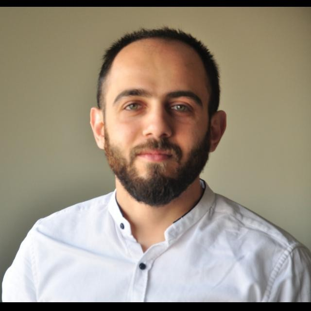

Personal information
Electrical and Electronic Engineer, Department of Electrical Control Engineering.


Summary
Dedicated and results-oriented professional with a background in engineering, research
and development, and administration. Proven track record in project management, process
optimization, and data analysis. Strong analytical mindset and problem-solving skills acquired
through roles as a Production Engineer. Demonstrated ability to navigate administrative tasks
and collaborate with diverse stakeholders. Committed to humanitarian causes, showcased
through volunteer experience. Eager to contribute diverse skills, coupled with a passion for
social impact.
Education
Master in Electrical and Electronic Engineering.
Nov.2022
Kahramanmaras sütçü imam university, Kahramanmaras, Turkey.
Completed 2 semesters and successfully finished 8 classes in the Master's program.
Bachelor of Science in Electrical Drive Machines
Sep.2010 – Sep.2015
Aleppo University, Aleppo, Syria
Work experience
Skills
Languages
- Arabic : mother tongue
- English : Professional working proficiency
- Turkish : Professional working proficiency
Computer
- Very good command of Microsoft Office tools.
- Possess average knowledge in programming languages such as C++,Python.
- Skilled in using A.S.,TIAPortal, wincc, wplsoft, dopsoft, factory,EPlan,MATLABand AutoCADprograms.
Communication
- Problem-solving and analytical skills.
- Effective at planning and development.
- Highly motivated and task oriented.
Courses and Training
Jan.2023 – present
- Enrolled in English language learning program at English Castle, online.
May.2018
- Attended a communication skills course in Kahramanmars, Turkey, offered by Orange organizationSN:31008
Dec.2016 – Jul.2017
- Enrolled in Turkish language learning program at Uludağ University, Bursa, Turkey
Projects
- Utilizing the Python programming language to implement algorithms and models for image analysis,
object recognition, and intelligent decision-making.
- Successfully completed a project during university studies focused on driving a sensor less motor